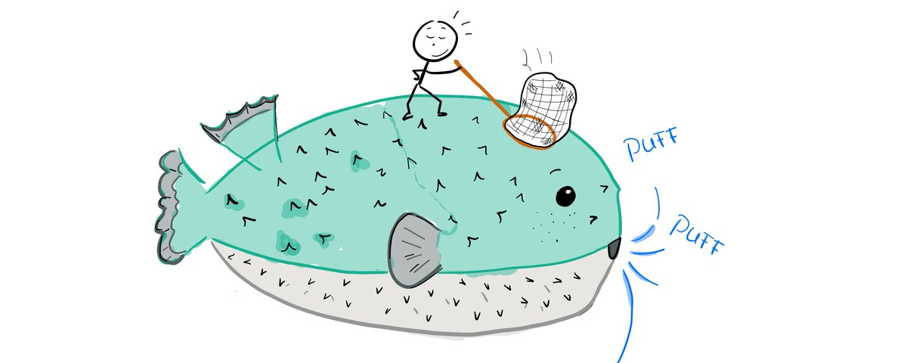

A High Throughput Recurrent Network for PufferLib 4.0

MinGRU is an RNN that is more hardware-efficient than LSTMs for sequences of length T>=4. It usually requires normalization layers, which are slow for small models. We discovered that highway connections work as a stable alternative. The new PufferNet architecture combines both. It matches or exceeds LSTMs on every task in PufferLib and raises the reasonable cap on trajectory segment length from 128 to 1024 steps. It is roughly 2x faster for length 64 sequences, which is the default horizon in Puffer 3.
$$\begin{aligned} p &= \sigma(W_p x) && \text{(transform gate)} \\ u &= W_u x && \text{(candidate)} \\ f &= \sigma(W_f x) && \text{(update gate)} \\[12pt] h_{t+1} &= u \odot f + h_t \odot (1 - f) && \text{(next hidden state)} \\[12pt] y &= x \odot (1 - p) + h_{t+1} \odot p && \text{(output to next layer)} \end{aligned}$$

Problem: RNNs are still the dominant architecture in online RL because they are efficient for single-step inference during rollouts. However, training is not parallelizable over the time dimension. Online reinforcement learning runs N environments for T steps each epoch. Batch size NT is capped in practice, and LSTMs are only hardware-efficient for large N. This implies small T (short rollout sequences), which limits credit assignment. In other words, LSTMs restrict the power of your learning algorithm in order to stay in the hardware-efficient regime.
Solution: There's this neat trick called a parallel scan. MinGRU uses this one. The math isn't that hard, but I've been writing kernels for the last 3 months, so here's the oversimplified version: traditional RNNs have to apply nonlinearities after the matmul on each timestep. If you simplify some of the gates, there's a mathematical equivalence that allows you to do all the matmuls for the entire sequence at once. You can then loop over only the activation functions, which is much faster. If you get clever, you can even reduce the calculation of activations to log(T) operations. Assuming the new RNN learns as well as your original LSTM, you now have an architecture that is efficient for both short and wide rollout buffers.
Problem: MinGRU is worse than an LSTM (and GRU) out of the box. The authors removed some of the GRU's gates and parameters to make the model heinsen scannable. This makes the architecture less expressive, and it consistently underperformed the original in testing.
Solution: Stack 4 of them. MinGRU has only a single matmul of dimensions input, 2*hidden. The LSTM has two matmuls of dimension input, 4*hidden and hidden, 4*hidden. For equal input and hidden dimension, this means one MinGRU layer has 1/4 the parameters and very nearly 1/4 the flops of an equivalent LSTM layer. Presumably because the network is now deeper, we found normalization to be required between layers (fewer, wider layers performed worse). Our original experiments closely matched performance of a single LSTM layer across easy and hard environment in PufferLib with the same set of hyperparameters.
Problem: If you implement this in torch, you will find MinGRU is much slower than nn.LSTM. There are two major causes of this. First, you're comparing a naive implementation to optimized kernels. Go implement an LSTM yourself in torch to see just how much that matters. Second, normalization operations require reductions that are inefficient for small networks. It is very important to retain efficiency for small models. One of the reasons you see a lot of RL researchers using much bigger models than PufferLib's is that their implementations are inefficient. If your 5M param model runs at the same speed as a 50k parameter model, you're always going to use the 5M param one. If your 50k parameter model is 100x faster and your simulator can keep up, that will often be the better choice. You don't get to see any of this unless your architecture scales both up and down.
Solution: Custom kernels for everything. There's no way around this. Look, if your architecture is only slow because of Torch, then you shouldn't be using Torch. It is ridiculous that we are cutting ourselves off from major architecture advancements because our libraries are slow. The fused scan operation is the most important custom kernel, but you get quite a bit of extra performance just by fusing all the elementwise operations. No, torch compile doesn't do it for you, and no, cudagraphs alone doesn't either. See our main engineering article on Puffer 4 for details.
Solution: Remember highway networks? No? They were all the rage for a few months when I was getting into research. It just so happens that my first publication used them, and I remember them being very stable and easy to work with. A highway connection is simply a fancy residual that introduces 1 additional linear layer on the input. For MinGRU, this just means increasing the linear layer dimension from (input, 2*hidden) to (input, 3*hidden). The important part is that this gate is on the output only, not on the state, so it doesn't break prefix scan. For small nets, the wider matmul is basically free and saves you an expensive norm. For larger nets, the wider matmul adds capacity anyways. Highway connections did as well or better than RMSNorm in our experiments.
Result: All our training is about 2x faster than with an LSTM of the same size. More importantly, we're no longer constrained to length 32 or 64 trajectory segments. We've tested up to 1024 horizon at 5M steps/second. Our fused scan kernel is actually still quite primitive, and we believe there's quite a bit of room for improvement on longer sequences. If this sounds interesting, join us on discord.gg/puffer and start contributing to the project!
Cover art by Daphne Cornelisse